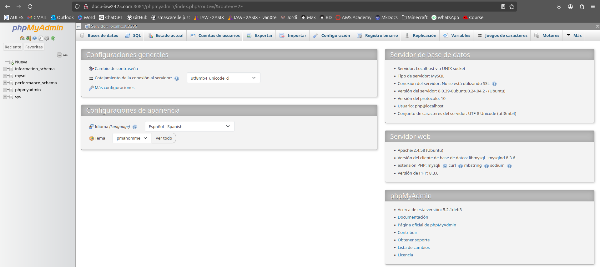
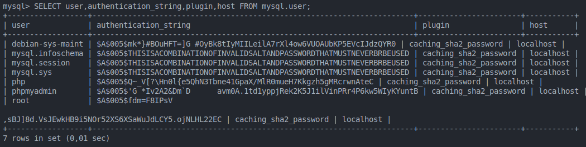
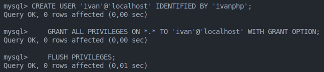
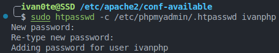
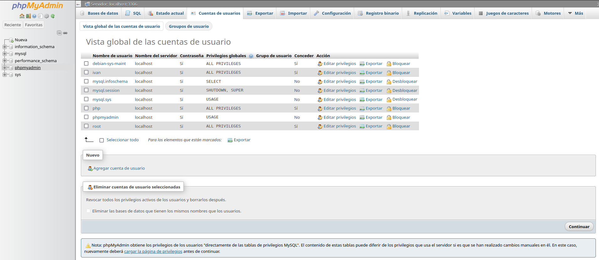

Practica 03: Instalar, configurar y securizar phpMyAdmin
Instalar phpMyAdmin
-
Para instalar phpMyAdmin, vamos a utilizar el paquete de instalación de Debian/Ubuntu:
sudo apt install phpmyadmin -
Instalaremos las dependencias necesarias para phpMyAdmin:
sudo apt install php-mbstring php-xml php-zip php-gd php-curl php-json -
Ahora, vamos a crear un usuario para phpMyAdmin:
sudo mysql -u root -p -
Crearemos un usuario para phpMyAdmin:
CREATE USER 'php'@'localhost' IDENTIFIED BY 'root'; GRANT ALL PRIVILEGES ON *.* TO 'php'@'localhost' WITH GRANT OPTION; FLUSH PRIVILEGES; -
Habilitamos la extensión mbstring y reiniciamos el servicio de Apache:
sudo phpenmod mbstring sudo systemctl restart apache2

- Automatización de la instalación de LAMP
# Instalar PHP
sudo apt update -y
sudo apt install php libapache2-mod-php -y
# Paquetes Opcionales
sudo apt install php-cli -y
sudo apt install php-cgi -y
sudo apt install php-mysql -y
sudo apt install php-pgsql -y
# Instalar phpmyadmin
sudo apt install phpmyadmin php-mbstring php-zip php-gd php-json php-curl -y
# Acceder a MySQL para modificar configuración
sudo mysql -e 'UNINSTALL COMPONENT "file://component_validate_password";'
# Crear un nuevo usuario en MySQL con todos los privilegios
sudo mysql -e "CREATE USER 'php'@'localhost' IDENTIFIED BY 'root';"
sudo mysql -e "GRANT ALL PRIVILEGES ON *.* TO 'php'@'localhost' WITH GRANT OPTION;"
sudo mysql -e "FLUSH PRIVILEGES;"
# Reiniciar servidor Apache
sudo systemctl restart apache2
Configuración de MYSQL
-
Configuración del Acceso por Contraseña para la Cuenta Root de MySQL
- Cambia el método de autenticación del usuario root de MySQL.
sudo mysql -u root -p ALTER USER 'root'@'localhost' IDENTIFIED WITH 'caching_sha2_password' BY 'Root_pass1'; FLUSH PRIVILEGES;- Verifica los métodos de autenticación empleados por cada uno de tus usuarios.
SELECT user,authentication_string,plugin,host FROM mysql.user;

-
Configuración de la Contraseña de la Cuenta de Usuario de MySQL
- Crea una nueva cuenta de usuario con el nombre de usuario 'ivan' y la contraseña 'ivanphp'.
- Darle al nuevo usuario todos los privilegios de la cuenta root.
CREATE USER 'ivan'@'localhost' IDENTIFIED BY 'ivanphp'; GRANT ALL PRIVILEGES ON *.* TO 'ivan'@'localhost' WITH GRANT OPTION; FLUSH PRIVILEGES;
Asegurar PhpMyAdmin
-
Habilitar sobrescritura de archivos .htaccess en el configuración de Apache y agregamos AllowOverride All en la sección Directory del archivo de configuración de Apache.
sudo nano /etc/apache2/conf-available/phpmyadmin.conf
Reiniciamos el servicio de Apache.
sudo systemctl restart apache2 -
Crea un archivo .htaccess en el directorio de phpMyAdmin.
sudo nano /usr/share/phpmyadmin/.htaccessDentro de dicho archivo, agregamos las siguientes líneas de código:
AuthType Basic AuthName "Restricted Files" AuthUserFile /etc/phpmyadmin/.htpasswd Require valid-user -
Crea un archivo .htpasswd para almacenar las credenciales de usuario y contraseña.
sudo htpasswd -c /etc/phpmyadmin/.htpasswd ivanphp
-
Reiniciamos el servicio de Apache.
sudo systemctl restart apache2
